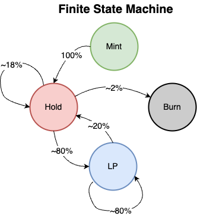
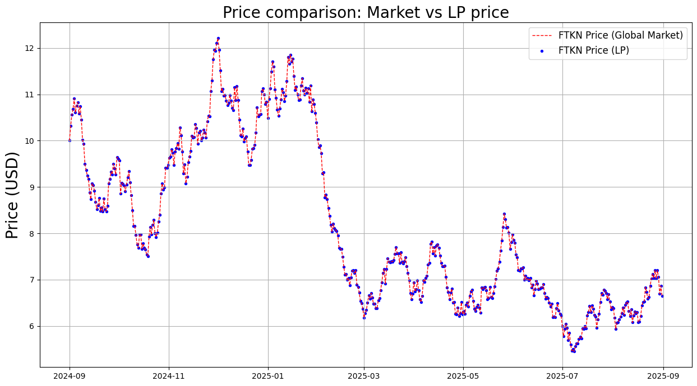

Finite State Machine
To download notebook to this tutorial, see here

Useful for when we want to factor in the supply of mintable/burnable token in a simulated DEX environment; typically, there are four states to consider in these types of situations, as per figure above, which are as follows:
Mint
Hold
In-use (LP)
Burn
📘 Notable Classes
Class: 📘
defipy.analytics.simulate.TokenSupplyStatePurpose: Manage mintable/burnable token supply states.
Methods:
next_state(minted = None)get_current_state(state_name = None)inspect_states(tail = True, num_states = 5)check_states()
[4]:
from defipy import *
import numpy as np
import datetime
import matplotlib.pyplot as plt
Simulate GBM process
[3]:
# Instantiation Parameters
n_steps = 500 # Number of steps
start_price = 10 # Initial price SYS/USD
mu = 0.1; sigma = 0.5
n_paths = 1 # Number of simulationed paths
seconds_year = 31536000
# Brownian Model
bm = BrownianModel(start_price)
p_arr = bm.gen_gbms(mu, sigma, n_steps-1, n_paths).flatten()
dt = datetime.timedelta(seconds=seconds_year/n_steps)
dates = [datetime.datetime.strptime("2024-09-01", '%Y-%m-%d') + k*dt for k in range(n_steps)]
Setup UniV2 Pool
[3]:
user_nm = 'user0'
finite_tkn_amt = 1000
market_tkn_amt = p_arr[0]*finite_tkn_amt
ftkn_nm = 'FTKN'
mtkn_nm = 'MTKN'
lp_state = TokenSupplyState(stochastic = True)
TKN_amt = TokenDeltaModel(100)
finite_tkn = ERC20(ftkn_nm, "0x111")
market_tkn = ERC20(mtkn_nm, "0x09")
exchg_data = UniswapExchangeData(tkn0 = finite_tkn, tkn1 = market_tkn, symbol="LP", address="0x011")
factory = UniswapFactory("pool factory", "0x2")
lp = factory.deploy(exchg_data)
Join().apply(lp, user_nm, finite_tkn_amt, market_tkn_amt)
lp.summary()
Exchange FTKN-MTKN (LP)
Reserves: FTKN = 1000.0, MTKN = 10000.0
Liquidity: 3162.2776601683795
Simulation: Random Swapping + Token Supply
[4]:
arb = CorrectReserves(lp, x0 = p_arr[0])
mint_finite_tkn_deposit = TKN_amt.delta()
lp_state.next_state(mint_finite_tkn_deposit)
pFTKN_MTKN_arr = [];
for k in range(n_steps):
# *****************************
# ***** Token Supply ******
# *****************************
mint_finite_tkn_deposit = TKN_amt.delta()
lp_state.next_state(mint_finite_tkn_deposit)
lp_diff_amt = lp_state.get_current_state('dLP')
if(lp_diff_amt > 0):
AddLiquidity().apply(lp, finite_tkn, user_nm, lp_diff_amt)
elif(lp_diff_amt < 0):
RemoveLiquidity().apply(lp, finite_tkn, user_nm, abs(lp_diff_amt))
# *****************************
# ***** Random Swapping ******
# *****************************
Swap().apply(lp, finite_tkn, user_nm, TKN_amt.delta())
Swap().apply(lp, market_tkn, user_nm, p_arr[k]*TKN_amt.delta())
# *****************************
# ***** Rebalance ******
# *****************************
arb.apply(p_arr[k])
# *****************************
# ******* Data Capture ********
# *****************************
pFTKN_MTKN_arr.append(LPQuote().get_price(lp, finite_tkn))
lp.summary()
Exchange FTKN-MTKN (LP)
Reserves: FTKN = 7270.9112748747275, MTKN = 48291.68168177554
Liquidity: 18412.486449709115
[5]:
lp_state.check_states()
lp_state.inspect_states(tail = True, num_states = 5)
Amount of tokens retained across states: PASS
[5]:
| Mint | Held | LP | Burn | dHeld | dLP | dBurn | |
|---|---|---|---|---|---|---|---|
| 496 | 6.197709 | 1461.746027 | 4997.481565 | 4126.305875 | -178.265581 | 266.384755 | 11.696139 |
| 497 | 1.911922 | 1422.617935 | 5015.953375 | 4153.159866 | -39.128092 | 18.471810 | 26.853992 |
| 498 | 7.842685 | 1584.937663 | 4839.653810 | 4169.051625 | 162.319728 | -176.299565 | 15.891759 |
| 499 | 56.223322 | 1267.204562 | 5164.140312 | 4170.140908 | -317.733101 | 324.486502 | 1.089284 |
| 500 | 3.968017 | 1328.861096 | 5148.020451 | 4180.827558 | 61.656533 | -16.119861 | 10.686649 |
Plot Results
[6]:
dfDistrLP = lp_state.get_state_df()
mint = dfDistrLP.Mint.values
held = dfDistrLP.Held.values
lpool = dfDistrLP.LP.values
burned = dfDistrLP.Burn.values
fig, (mint_ax, hold_ax, lp_ax, burn_ax) = plt.subplots(nrows=4, sharex=True, sharey=False, figsize=(12, 10))
fig.suptitle(f'Token Supply Breakdown {ftkn_nm}', fontsize=20)
mint_ax.plot(dates, mint[1:], color = 'g', label = 'mint')
mint_ax.set_xlabel("Time unit", fontsize=12)
mint_ax.set_ylabel("Minted Tokens", fontsize=14)
hold_ax.plot(dates, held[1:], color = 'blue', label = 'hold')
hold_ax.set_xlabel("Time unit", fontsize=12)
hold_ax.set_ylabel("Held Tokens", fontsize=14)
lp_ax.plot(dates, lpool[1:], color = 'r', label = 'lp')
lp_ax.set_xlabel("Time unit", fontsize=12)
lp_ax.set_ylabel("LP Tokens", fontsize=14)
burn_ax.plot(dates, burned[1:], color = 'black', label = 'burned')
burn_ax.set_xlabel("Time unit", fontsize=12)
burn_ax.set_ylabel("Burned Tokens", fontsize=14)
plt.tight_layout()

[7]:
fig, (TKN_ax) = plt.subplots(nrows=1, sharex=False, sharey=False, figsize=(15, 8))
TKN_ax.plot(dates, p_arr, color = 'r',linestyle = 'dashed', linewidth=1, label=f'{ftkn_nm} Price (Global Market)')
TKN_ax.scatter(dates, pFTKN_MTKN_arr, s=10, marker='o', color = 'b',linestyle = '-', linewidth=0.7, label=f'{ftkn_nm} Price (LP)')
TKN_ax.set_title('Price comparison: Market vs LP price', fontsize=20)
TKN_ax.set_ylabel('Price (USD)', size=20)
TKN_ax.legend(fontsize=12)
TKN_ax.grid()
